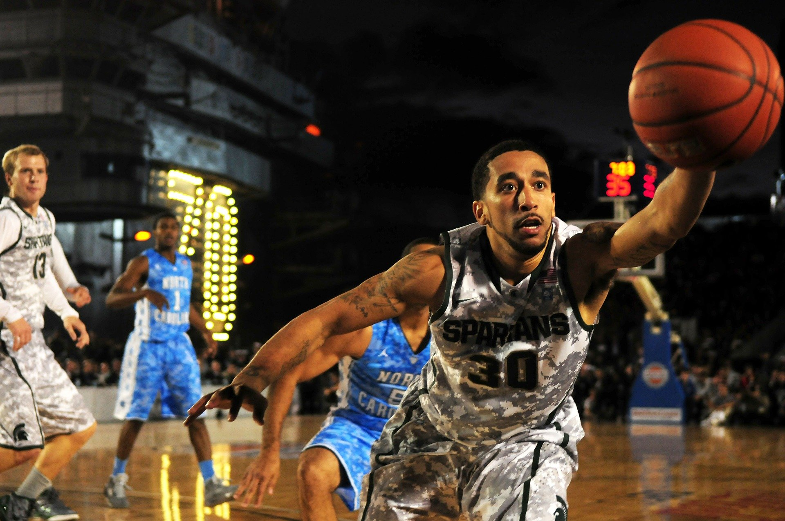
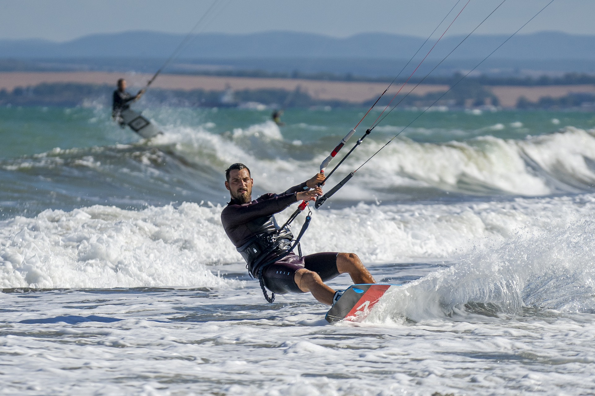
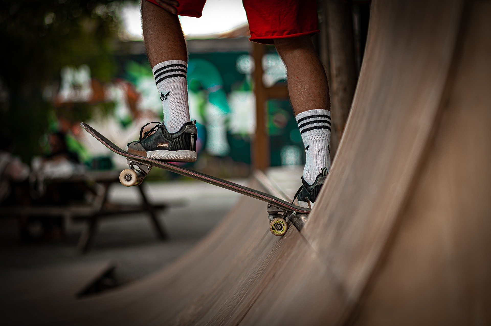

Make new mates, enjoy a bit of banter and learn new skills; here’s where to get into team sports.
All for one. One for all.
Team sports are about fun, friendship and loads and loads of brilliant memories. They’re good for your health, too.
So if you’re looking to try something new – or just need a little helping hand to get back into sport - why not discover the unique bond of belonging that only a team can give you?



Vitality in sports
In top level sport, we’re now involved in football, rugby, cricket, hockey and netball and are wholehearted advocates of women in sport. To help create long-term benefits for local communities, we’re also big supporters of grassroots sport and community initiatives like back to netball , back to hockey, parkrun with Vitality and the Community Sports Trust.
7 things we learnt from joining a sports team
Our #WomenInSport teammates share the amazing benefits of joining a local sports team and their tried-and-tested tips to get started.
7 reasons why team sports will super charge your health
From feeling more content to seeing your fitness levels sky rocket, these science-backed reasons prove that team sports can boost your physical and mental health.